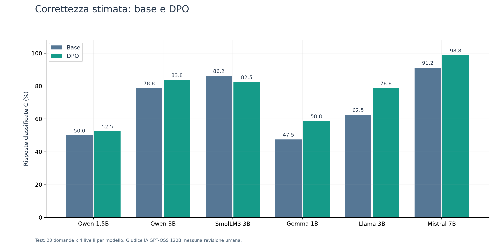
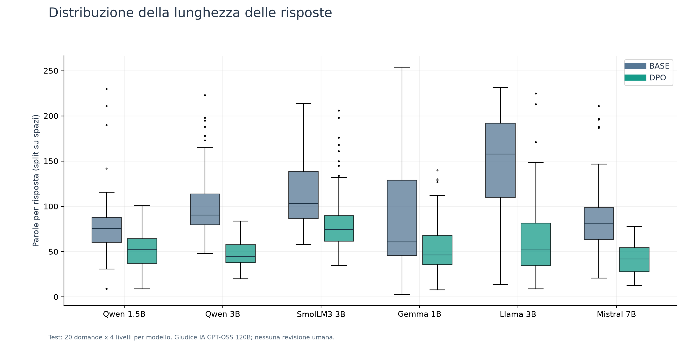

AstroTutor
Relazione finale di progetto — Tutor astronomico basato su RAG e valutazione del DPO su sei modelli linguistici.
AstroTutor nasce come tutor di astronomia capace di rispondere usando documenti di riferimento e un livello scelto dall’utente: A primaria, B medie, C superiori, D università. L’obiettivo è fornire spiegazioni corrette e comprensibili rispetto alle conoscenze dello studente. Nel prototipo il livello è selezionato esplicitamente: non viene stimato mediante un test iniziale.
Il sistema usa il RAG (Retrieval-Augmented Generation): prima cerca nei documenti i passaggi pertinenti, poi li inserisce nel prompt del modello. Il flusso è: PDF e fonti divulgative → estrazione → chunk → indice vettoriale → ricerca e riordino → risposta adattata.
| Modulo o classe | Funzione e tecnologie |
|---|---|
| parsing.py; ingest_api_data.py | Docling per i PDF; acquisizione di contenuti divulgativi, anche da Vikidia ed EduINAF. |
| chuncking.py; indexing.py | Pulizia e suddivisione del testo; embedding BAAI/bge-m3 e indice persistente ChromaDB. |
| AdvancedRetriever (retrieval.py) | Combina query italiana e tradotta; filtra per livello con fallback ai livelli vicini; riordina con BAAI/bge-reranker-v2-m3. |
| RAGGenerator (generation.py) | Costruisce il prompt con domanda, contesto e livello; genera tramite Ollama, con Qwen 2.5 3B come modello predefinito. |
| ResponseGuardrails; TripletFactory (alignment.py) | Controlli di registro e leggibilità con possibile rigenerazione; costruzione di esempi di preferenza tramite un modello “oracolo”. |
| evaluation.py; retrieval_eval.py | Valutazione storica con Gulpease, faithfulness RAGAS e rifiuti fuori dominio; analisi IR con BM25, Recall@k, MRR e nDCG. |
Il Direct Preference Optimization insegna al modello a preferire una risposta chosen a una rejected, date la stessa domanda e il medesimo contesto. Nel progetto originale erano già presenti training QLoRA/TRL e due versioni allineate di Qwen 3B: 378 e 623 triplette, poi esportate in GGUF e usate con Ollama. L’oracolo per i dati era configurato su Groq; questo non rendeva interamente locale la preparazione del dataset.
Il report del 26 luglio documenta risultati non replicati tra valutazione locale e Colab e problemi nella metrica dei rifiuti. La criticità iniziale era quindi anche come misurare l’effetto del DPO, non soltanto quanto addestrare il modello.
Evoluzione del progetto e tracciabilità
La nuova fase ha mantenuto l’architettura RAG, aggiungendo tracciabilità, prove controllate e un confronto su più modelli. Non è stata riscritta da zero l’applicazione.
| Intervento | Perché è importante |
|---|---|
| config.py e alignment.py | La chiave dell’oracolo è richiesta quando serve a generare dati, non al semplice import dei moduli locali. Il modello è configurabile tramite ambiente. |
| RAGGenerator.generate_record() | Salva prompt, contesti, configurazione, risposta originale e finale, tempi e dettagli dei guardrail. È possibile fornire gli stessi documenti a confronti diversi. |
| Guardrail tracciati e disattivabili | Distingue la risposta del modello dalle eventuali correzioni successive. Il controllo di registro non viene confuso con una verifica scientifica. |
| retrieval.py | Embedding e re-ranker selezionano CUDA quando disponibile, altrimenti CPU. Non viene introdotto un nuovo algoritmo di retrieval. |
| scripts/run_dev.py; judge_dev.py | Aggiungono confronti controllati e giudizi riprendibili, con registrazione dei dati e materiale per revisione. Dipendenze e file ignorati sono stati aggiornati. |
Prima della campagna finale sono state svolte prove sulle penalità di generazione, controlli del modello base e piccoli pilot DPO e SFT. Lo SFT addestra su esempi di risposta desiderata; il DPO su preferenze tra due risposte. Sono presenti anche pilot di continuazione SFT+DPO e SFT aggiuntivo. Queste prove hanno funzione diagnostica e non sono i risultati sui sei modelli riportati nelle pagine successive.
I tentativi di produrre automaticamente nuove coppie tramite modelli e filtri hanno avuto una resa bassa. Il dataset finale da 600 coppie è stato quindi costruito sinteticamente dall’assistente, a partire dai concetti dei documenti, e conservato con provenienza e controlli. Non è il semplice ampliamento del vecchio dataset da 623 triplette.
Il confronto Git verificato è main 6859ea6 → esperimento-calibrazione 9e21b5b: 10 file tracciati differiscono. Diversi script dei pilot sono presenti localmente ma risultano ancora non tracciati. La campagna finale e i grafici sono invece nella cartella esterna outputs/dpo_pdf_600 dell’area Codex: non vanno descritti come già committati nel branch.
File cruciali della campagna: dataset_consegna/build.py costruisce i dati; train_dpo_600.py e le varianti di famiglia eseguono il training; compare_test_*600.py generano base/DPO; evaluate_final_local.py, nonostante il nome, gestisce anche il giudice Groq; make_relation_charts.py produce i grafici dai file salvati.
Il nuovo esperimento e l’andamento del training
Il training comprende 75 domande × 4 livelli × 2 risposte rifiutate = 600 coppie. I 300 prompt hanno una risposta preferita e due tipi di negativo: errori fattuali o contenuti fuori tema. Questo insegna soprattutto correttezza e pertinenza; non isola la capacità di adattare la spiegazione al livello scolastico.
Sono stati addestrati Qwen 2.5 1.5B e 3B, SmolLM3 3B, Gemma 3 1B, Llama 3.2 3B e Mistral 7B v0.3. Lo stack usa PyTorch/CUDA, Transformers, Datasets, Accelerate, TRL, PEFT e bitsandbytes. Sulla RTX 4070 Laptop da 8 GB, QLoRA carica i pesi in NF4 e addestra piccoli adapter LoRA, riducendo il fabbisogno di memoria.
Configurazione comune: 2 epoche, 300 step, learning rate 5×10
Figura 1. Loss DPO nei sei training. La linea tenue mostra il log per step; quella piena una media mobile di 20 step. La linea verticale indica la fine della prima epoca.

La loss diminuisce nei sei run: il modello sta imparando le preferenze del dataset. Il calo più rapido o il valore finale più basso non provano che un modello sia un tutor migliore. Non sono disponibili curve di validation; per valutare l’effetto sulle risposte si usa il test separato.
Il test usa 20 domande nuove, 10 brani e 4 livelli: 80 prompt per modello, generati sia con il modello base sia con l’adapter DPO. I documenti del test sono separati da quelli del training. Entrambe le condizioni usano gli stessi contesti riformulati in italiano, decoding greedy, NF4 e massimo 384 nuovi token, senza guardrail. Il test isola la generazione con contesto fornito: non rivaluta il retrieval RAG.
Le 960 risposte sono state valutate da GPT-OSS 120B su Groq, senza indicare al giudice il modello o la condizione. Otto duplicati identici per lo stesso prompt condividono il giudizio: 952 valutazioni uniche. Il primo giudice locale Qwen 7B è stato scartato dopo controlli qualitativi. I risultati finali restano giudizi IA, non una revisione umana.
Risultati: la correttezza migliora, ma non sempre
La rubrica distingue risposte C (corrette), P (parziali o con imprecisioni rilevanti) e I (errate nel nucleo o con errori gravi). Completezza, adeguatezza al livello e chiarezza sono valutate separatamente da 0 a 2.
Figura 2. Percentuale di risposte classificate C dal giudice IA, su 80 per condizione. Le quattro versioni di una domanda non sono osservazioni indipendenti.

| Modello | C base → DPO | Variazione | Adeguatezza base → DPO |
|---|---|---|---|
| Qwen 2.5 1.5B | 40 → 42 /80 | +2.50 p.p. | 1.48 → 1.49 |
| Qwen 2.5 3B | 63 → 67 /80 | +5.00 p.p. | 1.84 → 1.79 |
| SmolLM3 3B | 69 → 66 /80 | -3.75 p.p. | 1.90 → 1.90 |
| Gemma 3 1B | 38 → 47 /80 | +11.25 p.p. | 1.38 → 1.41 |
| Llama 3.2 3B | 50 → 63 /80 | +16.25 p.p. | 1.73 → 1.71 |
| Mistral 7B v0.3 | 73 → 79 /80 | +7.50 p.p. | 1.95 → 1.84 |
La correttezza stimata cresce in cinque modelli su sei; SmolLM3 registra una diminuzione. Llama mostra il maggiore aumento assoluto (+13 risposte C); Mistral passa da 73 a 79 su 80. Sommando descrittivamente le condizioni dei sei modelli, le risposte C passano da 333 a 364 su 480. Questa somma non è un campione di 480 domande indipendenti.
La sola percentuale di C non descrive tutte le regressioni. Per esempio, in Qwen 1.5B aumentano sia le risposte corrette (40→42) sia quelle errate I (18→20), a scapito delle parziali. In Qwen 3B gli errori I scendono da 8 a 0, mentre diminuisce la completezza media. Il risultato dipende quindi dalla dimensione di qualità osservata.
Incertezza: gli intervalli bootstrap del fascicolo completo raggruppano per 10 brani. Non coprono l’errore del giudice o la variabilità tra seed; non è stata applicata una correzione per confronti multipli. Le differenze sono da presentare come risultati esplorativi, non come prova generale dell’efficacia del DPO.
Adattamento didattico e conclusione
Figura 3. Medie dei voti IA (0-2). Correttezza, completezza e adeguatezza sono dimensioni distinte: il DPO non migliora uniformemente tutte le qualità di un tutor.

Figura 4. Lunghezza delle risposte: mediana, quartili e distribuzione. La riduzione è comune ai sei modelli; maggiore brevità non equivale automaticamente a maggiore utilità didattica.

Il caso Mistral rende evidente il compromesso: la correttezza cresce, ma la completezza media passa da 1,95 a 1,80, l’adeguatezza da 1,95 a 1,84 e le parole medie da circa 86 a 44. Anche negli altri modelli il DPO tende ad accorciare le risposte. I casi al limite di token sono stati conservati, non esclusi dal confronto.
Conclusione. Il progetto passa da un prototipo RAG con primi tentativi di allineamento a un confronto più tracciabile e ripetibile su sei modelli. I risultati non permettono di affermare che “il DPO è inutile”: mostrano benefici sulla correttezza, ma non un adattamento didattico uniforme. Per l’obiettivo originale del tutor, resta da verificare se questi benefici siano percepiti anche dagli studenti.
Limiti e sviluppi futuri: dati sintetici scritti dall’assistente, un solo giudice IA, un seed, test piccolo e nessuno studio sull’apprendimento. Il campione cieco di 24 coppie è pronto ma non sottoposto a revisione umana indipendente. I pilot SFT esistono, ma non costituiscono un confronto SFT sistematico sui sei modelli.
Fonti interne verificate: repository locale e diff main/esperimento-calibrazione; report storico del 26/07/2026; manifest del dataset e del test; log dei sei training; final_groq_v1/summary.json e scored_responses.json. I grafici sono riprodotti dai dati salvati, senza nuove generazioni.
Interfaccia dimostrativa e riproducibilità
Il progetto è completato da una semplice interfaccia web locale. L’utente seleziona il livello scolastico, uno dei sei modelli e la modalità Base, DPO o confronto affiancato. Alla domanda seguono le risposte e i brani effettivamente recuperati, consultabili in un pannello espandibile. La sessione può essere esportata in JSON; le domande sono elaborate separatamente, senza memoria conversazionale.
| Componente | Responsabilità |
|---|---|
| app.py | Gestisce la pagina Streamlit, le impostazioni, la visualizzazione delle risposte e delle fonti; presenta anche i risultati congelati dell’esperimento. |
| TutorService (backend.py) | Riusa la ricerca di AdvancedRetriever e la costruzione del prompt di RAGGenerator. Carica i pesi e gli adapter finali da disco tramite Transformers e PEFT. |
| Confronto Base/DPO | Recupera i brani una sola volta; usa il medesimo modello con adapter disattivato o attivo. Un lock serializza l’accesso e un solo modello rimane caricato. |
| run_app.ps1; install_ui.py | Avviano il server su localhost e gestiscono le dipendenze della UI in una cartella separata, preservando l’ambiente usato per i training. |
La generazione usa la GPU e i pesi quantizzati NF4. Embedding e re-ranker restano su CPU per lasciare memoria al modello linguistico. Non sono necessarie chiamate Groq: la demo usa i modelli già scaricati e l’indice RAG esistente. La scheda dei risultati legge i file dell’esperimento senza ricalcolarli.
La demo esegue retrieval live con la sola query italiana e il prompt RAG del progetto; non applica i guardrail. Il test sperimentale, invece, confronta i modelli con contesti già fissati. Le risposte ottenute dall’interfaccia non sono quindi ulteriori osservazioni del test né una replica esatta della pipeline Ollama originale. Le fonti rendono il risultato ispezionabile, ma non garantiscono da sole la correttezza della risposta.
Sono stati verificati l’avvio della pagina, la lettura dei sei risultati e un confronto reale Base/DPO con Qwen 2.5 3B, recuperando due brani dall’indice. Questa prova controlla il collegamento dei componenti; non costituisce una nuova valutazione della qualità didattica o un collaudo esteso di tutti i modelli.
La relazione riassume architettura, modifiche e risultati; il fascicolo dei grafici contiene le analisi supplementari. La cartella dell’esperimento conserva dataset, manifest, adapter, log e valutazioni. La cartella streamlit_app contiene la demo e le istruzioni di avvio. Questi artefatti devono accompagnare il repository: la campagna esterna e l’interfaccia non risultano automaticamente incluse nel branch Git.
Riproducibilità: i manifest registrano revisioni dei modelli, configurazioni e hash dei dati. Una nuova esecuzione richiede i pesi locali, l’indice e l’ambiente descritto; i soli sorgenti della UI non includono diversi gigabyte di modelli.
Nota metodologica: il dataset finale e la redazione sono stati assistiti da IA. I risultati numerici provengono dai file salvati della campagna. Non si attribuisce ai giudizi automatici il valore di una validazione indipendente con docenti o studenti.